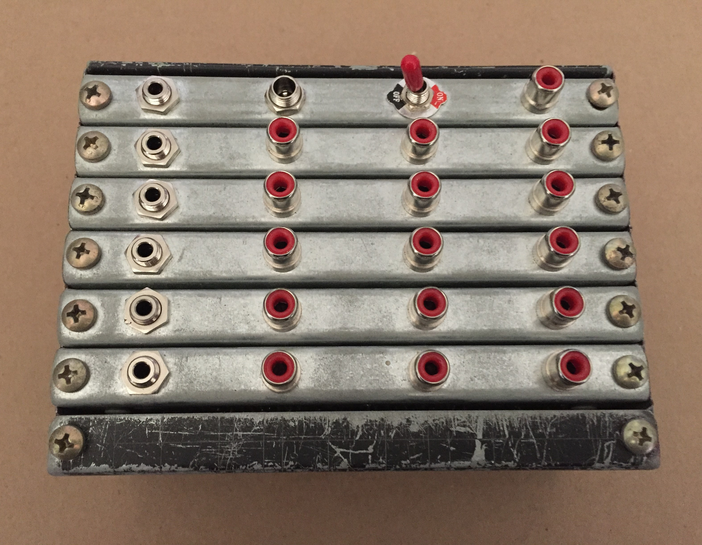
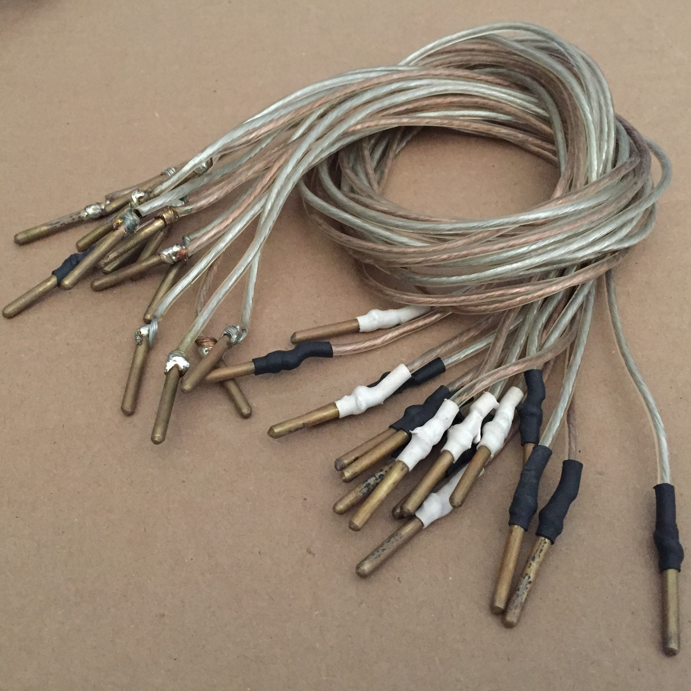
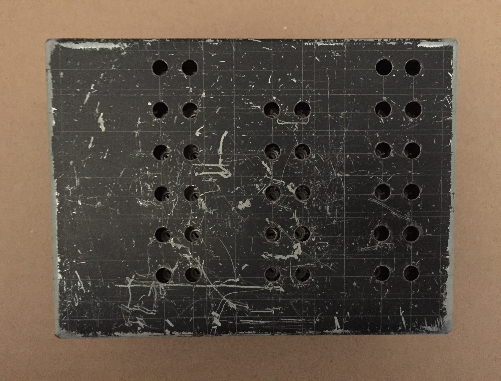
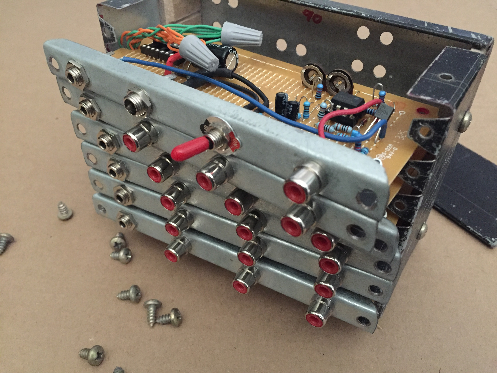
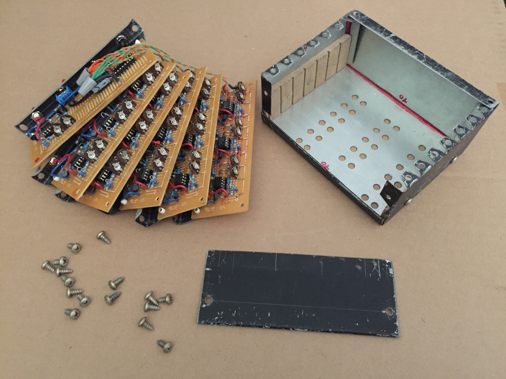
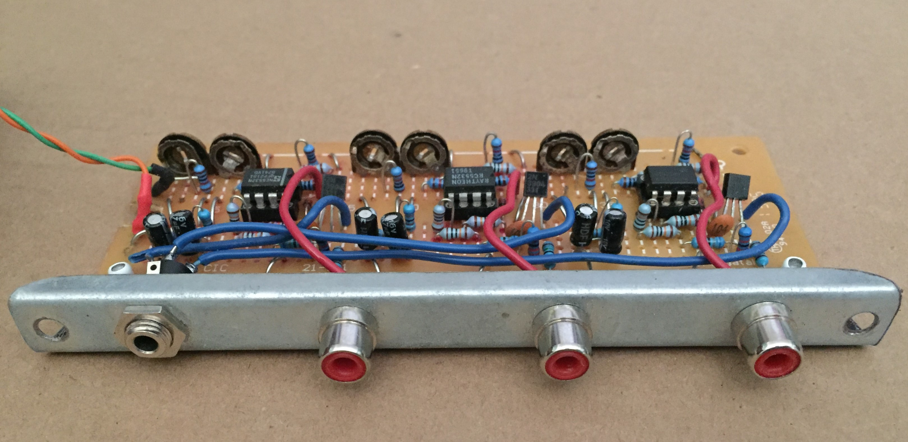
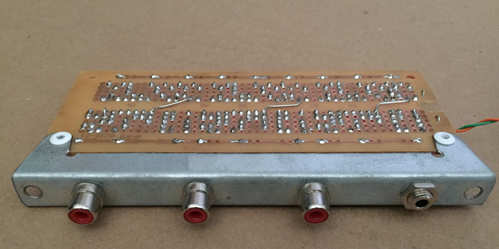
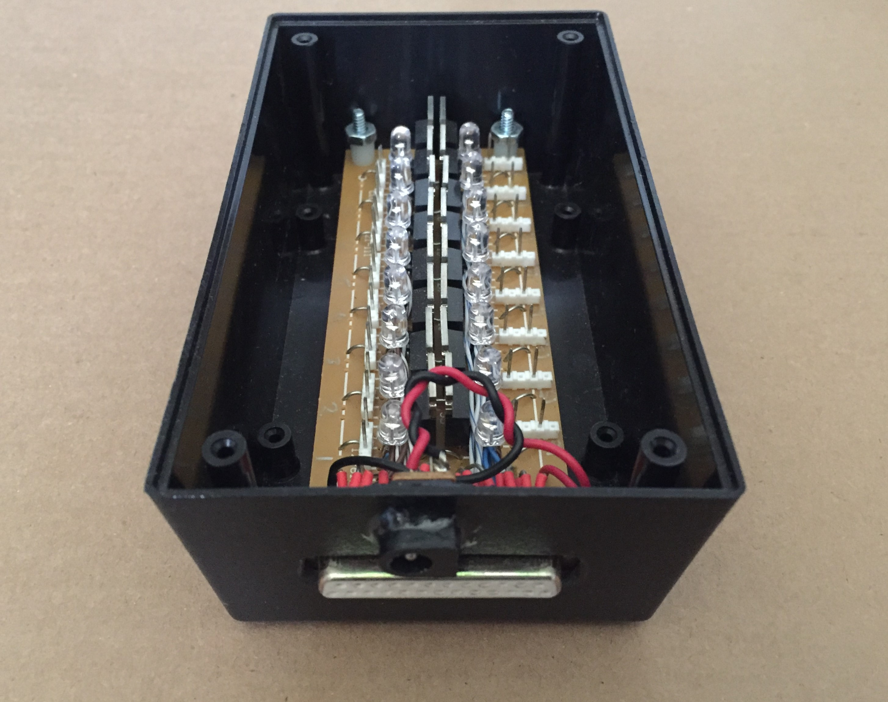
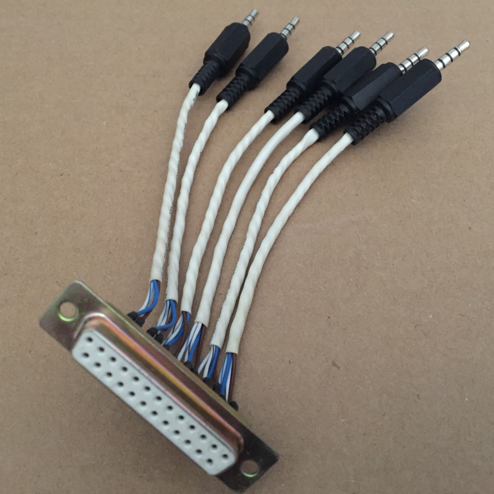
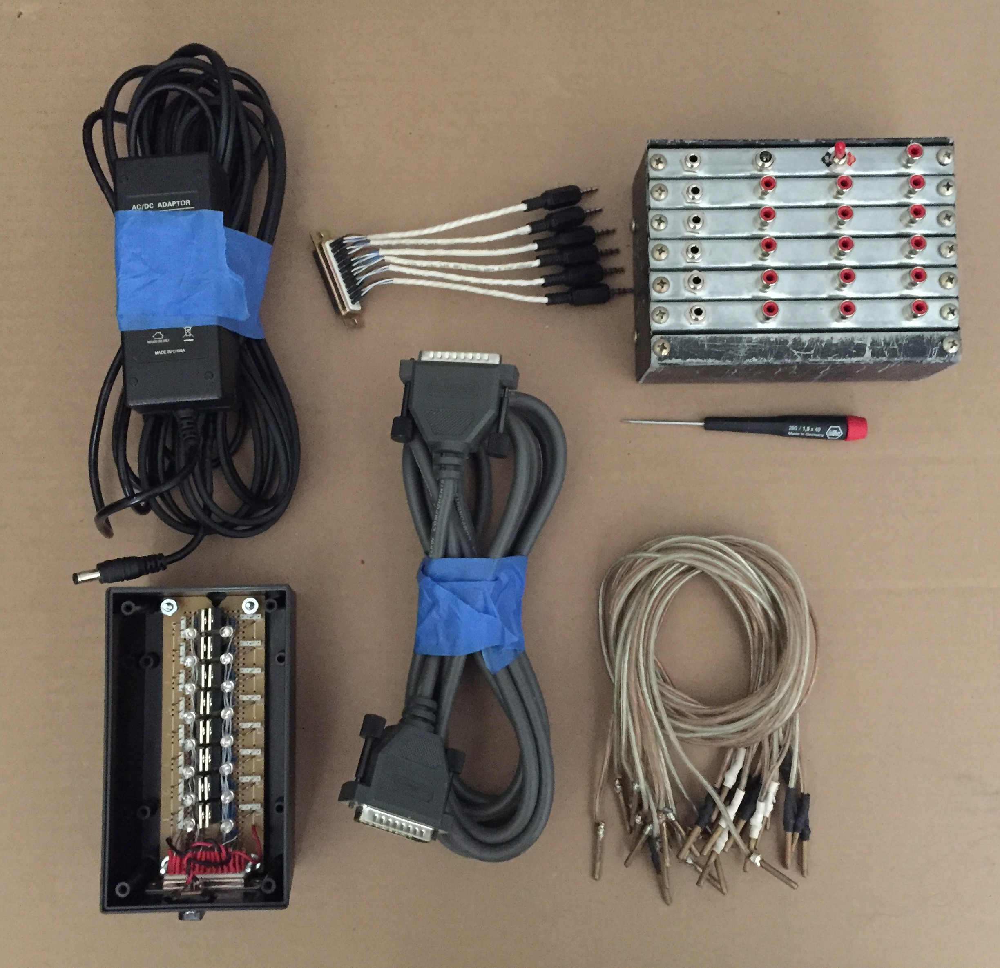

Analog Capacitive Touch Sensor
Touch sensors are everywhere these days, and can be designed really easily using an MCU, but the artist I was working for wanted something that worked similarly to a theremin for philosophical reasons. Now, a theremin works by extracting the beat frequency from two detuned high frequency oscillators, with one frequency fixed, and the other being varied by manually varying a capacitance. I didn't want to go too high in frequency because I wanted to use the bunch of NE5532s I had lying around, so I ditched the beat frequency thing. This design is based around an op amp relaxation oscillator, a simple peak detector and a comparator. I am only going to describe the first stage here because the output conditioning is super easy.
The Op Amp Pole
Sometimes, the best things about devices are their apparent limitations. A professor of mine wrote a paper which describes some "partially active R filters" -- filters that utilize IC amplifier poles as capacitors, so to speak. This gave me the idea to go ahead and exploit the finite bandwidth of a common IC op amp to make an oscillator with a frequency dependent amplitude.
An op amp relaxation oscillator is a fine candidate because the amplifier is operating open loop (b=0), so the corner frequency will be relatively low.

The frequency dependence of a relaxation oscillator's amplitude was easy to verify with a multimeter, but since I couldn't see the shape of the waveform, I couldn't tell for sure if the effect was due to a simple amplitude rolloff, or nonlinear slewing (I didn't have a scope at the time). Either will do the job, and different op amps will have different characteristics. According to the NE5532 datasheet, typical unity-gain bandwidth is 10MHz, and typical slew rate is 9V/us, and since the output is swinging its full range, slewing is expected. The important design consideration is finding the frequency and duty cycle which maximizes the amplitude sensitivity to operational ranges of measured capacitance.
SPICE Simulation
The SPICE circuit below shows the basic setup. There are a few things to talk about first: (1) D2, D3, R9 and the current sources simulate the input clamping, input resistance and input bias currents respectively of a typical NE5532. (2) The op amp model used is LTSpice's UniversalOpAmp2, which allows control over bandwidth, slew rate, output resistance, etc. (3) R7 and R8 are there to limit the current through the clamping diodes in the case of a weird situation at the output, or a shorting of the input cap or something. Aside from that, this is just a classic relaxation oscillator circuit operating in such a way to exploit speed limitations to control the amplitude. Also, R4 was made adjustable -- I happened to have a lot of 10k trimpots on hand, thus R3 and R2 had to be relatively small in value.

The capacitor labeled Cinput is the capacitance to ground of the person touching the input node, and it's value is stepped from 10pF down to 2pF in 2pF steps for a grand total of 5 transient simulation runs, as shown in the graph below, with red corresponding to Cin = 10pF and blue corresponding to Cin = 2pF.

Now apply this signal to a peak detector and a comparator and you have yourself a touch sensitive switch.
The Complete System
The goal here was to control 16 solenoid valves using touch sensors. So I had to make a device with 16 adjustable channels in a reasonably compact form factor. Here is what the main control module looks like:
The red RCA jacks are the inputs for the touch surfaces. I made some short cables from speaker wire to get from here to there:
Anyway, the 1/8" phone jacks are the control outputs to the solenoid switches. There is also a power jack for a 12V power supply and a power switch for convenience. On th back side, there is access to two trimpots for each channel:
Kind of hard to see in there... And also, the "finish" on this box is kind of ridiculous. When I make a sheetmetal box I usually apply some spray paint and make my break marks with a knife. Somehow I folded this thing inside out, but the artist didn't mind. Lucky me.
This is how it comes apart -- if that ever needs to happen:

So there are six "cards", five of which have three touch sensor channels, and the other which has just one and the power distribution stuff. Each of the five cards looks like this:
The trimpots can be seen at the rear.
All hand routed on protoboard with the sheetmetal face riveted to the pcb.
The solenoid valves required a decent amount of current, so I used some high side FET switches (IRF9540 P-channel) as shown in the switch module:
The outputs to the solenoid valves are the two pin molex connectors which might be hard to see in this picture, but there's nothing I can do about that. This unit takes a 12V power supply, and control signals for each channel, which come in at the million pin DSUB connector. I found the DSUB to be really convenient because you can get pretty long ones for fairly cheap. To convert from the phone jack output of the control module to the DSUB on the switch module, I made this little connector:
The whole system, minus the solenoid valves themselves and one of the power supplies looks like this:
It all came together pretty nicely, and the way the artist used it was totally absurd and fantastic. Check it out on Mariah Csepanyi's Website. It's pretty out there.